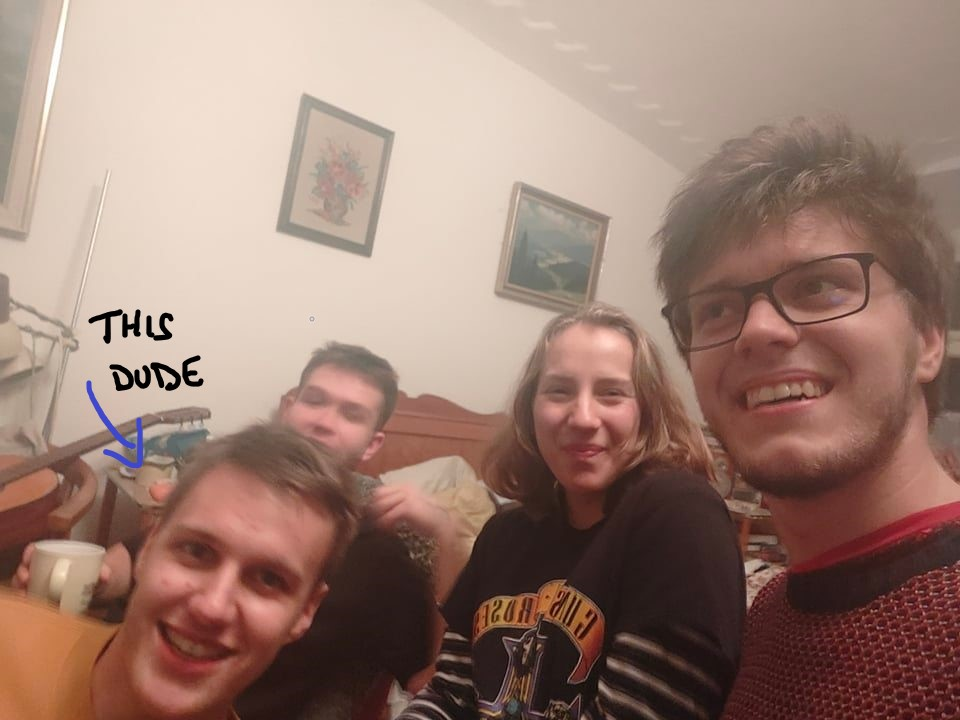

Studying in Netherlands
Choosing the right university can be difficult and overwhelming. This page will hopefully help you make a better-informed decision and who knows... maybe we'll see each other in Netherlands!
Who am I?
No, this is not meant as a philosophical question... unfortunately. 😄
My name is Adam Pazderka and I graduated from the bilingual section of GJN in 2020.
I was very excited about the possibility of studying abroad so I did some research about unis in UK and Switzerland. United States sounded interesting too, but they were way too impractical.
To my own surprise, I ended up studying Computer Science & Engineering at TU Delft in Netherlands where I successfully finished my first year.
Now, I'm taking a gap year to avoid online education (hopefully) and work on fun projects.
